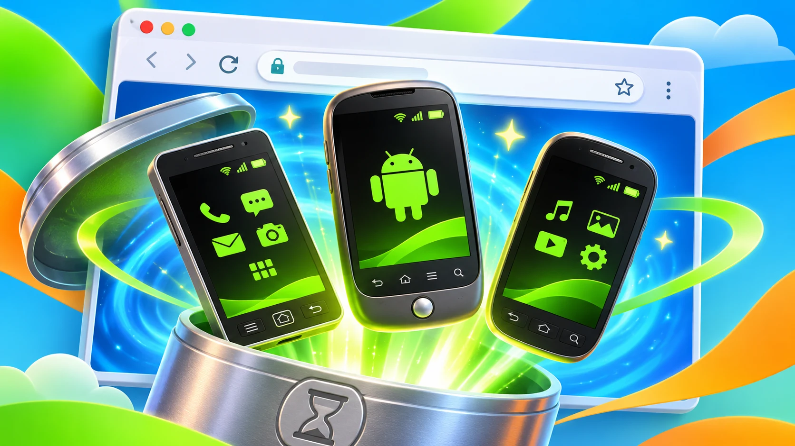

Android · Field note 074
Android Time Machine revisits classic phone interfaces
A free browser project brings older Android releases back into view.

Android Time Machine recreates classic Android interfaces in a browser, as highlighted in Ben Schoon’s November 16 coverage for 9to5Google.
The free project offers a way to revisit the look and interactions of earlier phone software without tracking down an old handset. Its source code is available on GitHub.
It is an interactive simulator: a recreation of those systems for exploration, rather than a replacement operating system for a current phone.
For longtime Android users, the appeal is a quick return to familiar screens. For newer users, it offers a glimpse of how much the interface changed over time.